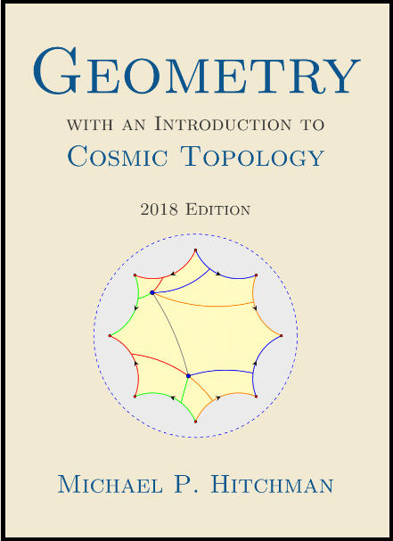

Welcome
Motivated by questions in cosmology, the open-content text Geometry with an Introduction to Cosmic Topology uses Mobius transformations to develop hyperbolic, elliptic, and Euclidean geometry - three possibilities for the global geometry of the universe.
The text, written for students who have taken vector calculus, also explores the interplay between the shape of a space and the type of geometry it admits. Geometry is suitable for a semester course in non-Euclidean geometry or as a guide to independent study, with over 200 exercises and several essays on topics including the history of geometry, parallax and curvature, and research aimed at determining the shape of the universe. More about the text can be found in the Preface.
Reading the text
Previously published in 2009, the author has made this updated and revised 2018 Edition freely available, thanks in large part to the PreTeXt Project.
The 2018 edition of Geometry appears in three formats. It can be read online as a collection of webpages, it can be downloaded as a printable pdf, and an inexpensive bound copy (6 x 9 paperback) is avialable for purchase through amazon.com.

Geometry with an Introduction to Cosmic Topology by Michael P. Hitchman is licensed under a Creative Commons Attribution-ShareAlike 4.0 International License.